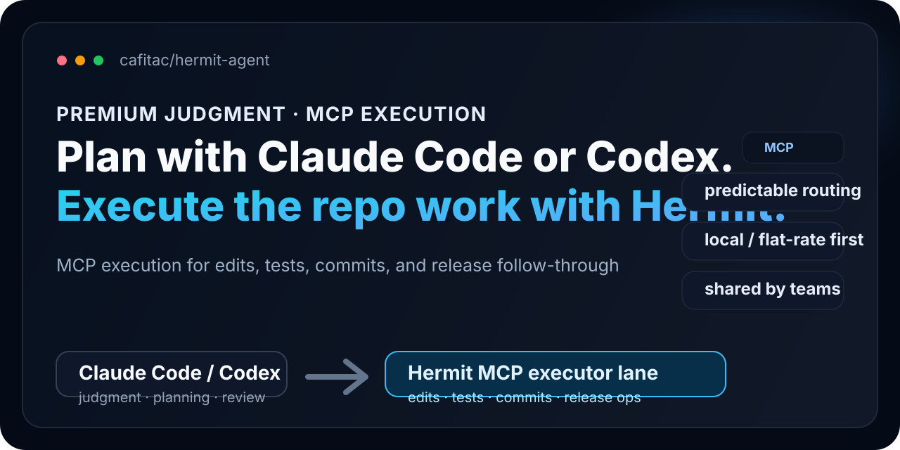

Message hierarchy
- Top line: premium judgment vs cheaper execution.
- Main headline: keep Claude Code or Codex for planning and review.
- Accent line: use Hermit for repetitive repo work.
This review page shows the repository social-preview card at full width, with the intended message hierarchy: plan with Claude Code or Codex, and route repetitive repo work through Hermit's MCP executor lane.

Use docs/assets/hermit-social-preview.svg as the editable source and this HTML file as the local review surface before exporting a PNG for GitHub's social preview setting.